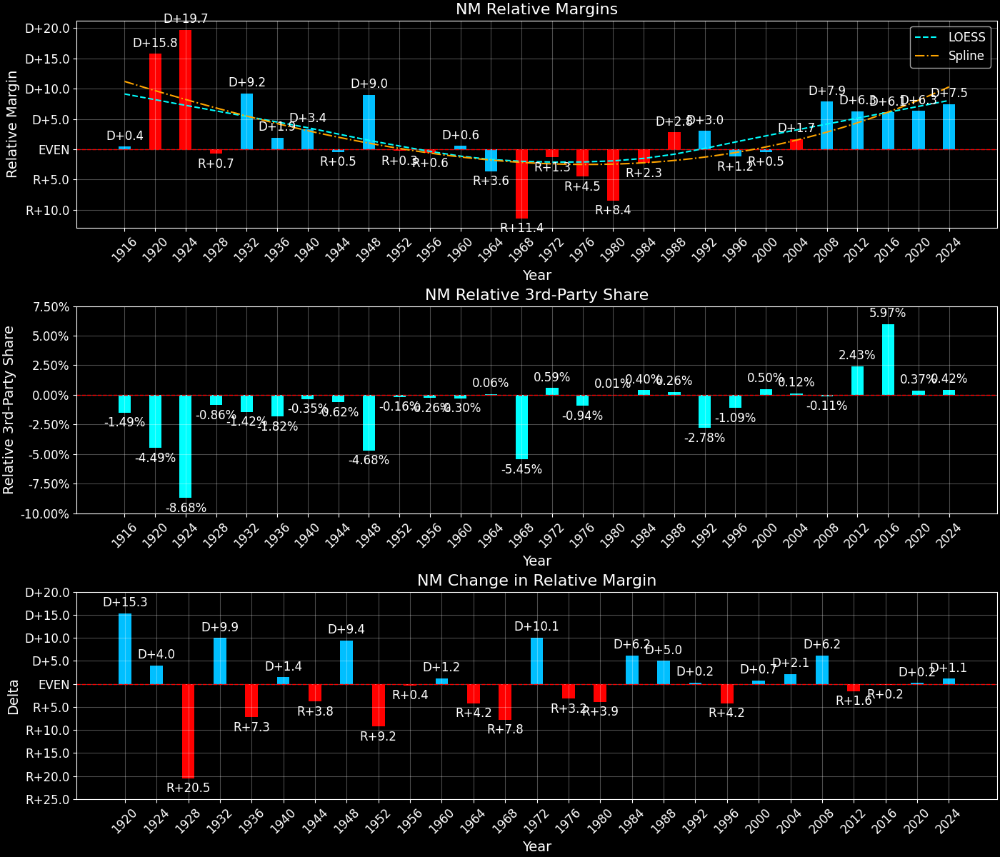

New Mexico (NM) — Statewide

Margins · 3P share · Pres. deltas

Relative margins · Relative 3P · Rel. deltas
New Mexico (NM) — Total Data
| Year | EVs | D | R | Margin | Rel. Margin | Nat. Margin | Margin Δ | Rel. Margin Δ | Nat. Margin Δ | Total votes |
|---|---|---|---|---|---|---|---|---|---|---|
| 1968 | 4 | 130,081(40.0%) | 169,692(52.1%) | R+12.2 | R+11.6 | R+0.6 | 325,510 | |||
| 1972 | 4 | 141,084(37.5%) | 235,606(62.5%) | R+25.1 | R+1.6 | R+23.5 | R+12.9 | D+10.0 | R+23.0 | 376,690 |
| 1976 | 4 | 201,148(48.3%) | 211,419(50.7%) | R+2.5 | R+4.7 | D+2.2 | D+22.6 | R+3.1 | D+25.7 | 416,590 |
| 1980 | 4 | 167,820(36.8%) | 250,779(55.0%) | R+18.2 | R+8.3 | R+9.9 | R+15.7 | R+3.6 | R+12.1 | 456,231 |
| 1984 | 5 | 201,769(39.2%) | 307,101(59.7%) | R+20.5 | R+2.4 | R+18.1 | R+2.3 | D+5.9 | R+8.2 | 514,370 |
| 1988 | 5 | 244,497(47.5%) | 270,341(52.5%) | R+5.0 | D+2.7 | R+7.7 | D+15.5 | D+5.1 | D+10.4 | 514,838 |
| 1992 | 5 | 261,617(46.2%) | 212,824(37.6%) | D+8.6 | D+3.0 | D+5.6 | D+13.6 | D+0.3 | D+13.3 | 566,336 |
| 1996 | 5 | 273,495(49.2%) | 232,751(41.9%) | D+7.3 | R+1.2 | D+8.6 | R+1.3 | R+4.3 | D+3.0 | 556,083 |
| 2000 | 5 | 286,684(48.0%) | 286,170(47.9%) | D+0.1 | R+0.4 | D+0.5 | R+7.2 | D+0.8 | R+8.0 | 596,904 |
| 2004 | 5 | 370,942(49.0%) | 376,930(49.8%) | R+0.8 | D+1.7 | R+2.5 | R+0.9 | D+2.1 | R+3.0 | 756,304 |
| 2008 | 5 | 472,422(57.1%) | 346,832(41.9%) | D+15.2 | D+7.9 | D+7.3 | D+16.0 | D+6.3 | D+9.7 | 826,881 |
| 2012 | 5 | 415,335(53.0%) | 335,788(42.8%) | D+10.1 | D+6.3 | D+3.9 | R+5.0 | R+1.6 | R+3.4 | 783,757 |
| 2016 | 5 | 385,234(48.3%) | 319,666(40.0%) | D+8.2 | D+6.1 | D+2.1 | R+1.9 | R+0.2 | R+1.8 | 798,318 |
| 2020 | 5 | 499,850(54.3%) | 401,668(43.7%) | D+10.7 | D+6.2 | D+4.4 | D+2.5 | D+0.1 | D+2.3 | 920,138 |
| 2024 | 5 | 478,802(51.9%) | 423,391(45.9%) | D+6.0 | D+7.5 | R+1.5 | R+4.7 | D+1.3 | R+6.0 | 923,403 |
Column explanations
- Year
- Election year.
- EVs
- Number of electoral votes allocated to this state or unit.
- D
- Number of votes for the Democratic candidate (raw count(pct%)).
- R
- Number of votes for the Republican candidate (raw count(pct%)).
- Margin
- Margin between the two major-party candidates, including third-party votes ((D - R)/total).
- Rel. Margin
- The presidential margin relative to the national presidential margin (Margin - Nat. Margin).
- Nat. Margin
- The national presidential margin for that year, including third-party votes ((D_total - R_total)/total_votes).
- Δ
- Change (delta) in the value from the previous election year. Blank if no data for previous year.
- Total votes
- Total voter turnout or ballots cast (when provided).
New Mexico (NM) — Third-Party Data
| Year | Other votes | 3rd Party Share | 3rd Party Nat. Share | 3rd Party Rel. Share |
|---|---|---|---|---|
| 1968 | 25,737(7.9%) | T+7.9 | T+13.6 | T-5.7 |
| 1972 | 0(0.0%) | T+0.1 | T-0.1 | |
| 1976 | 4,023(1.0%) | T+1.0 | T+0.3 | T+0.6 |
| 1980 | 37,632(8.2%) | T+8.2 | T+7.0 | T+1.3 |
| 1984 | 5,500(1.1%) | T+1.1 | T+0.1 | T+1.0 |
| 1988 | 0(0.0%) | T+0.2 | T-0.2 | |
| 1992 | 91,895(16.2%) | T+16.2 | T+19.2 | T-3.0 |
| 1996 | 49,837(9.0%) | T+9.0 | T+9.7 | T-0.7 |
| 2000 | 24,050(4.0%) | T+4.0 | T+3.7 | T+0.4 |
| 2004 | 8,432(1.1%) | T+1.1 | T+0.8 | T+0.3 |
| 2008 | 7,627(0.9%) | T+0.9 | T+1.4 | T-0.5 |
| 2012 | 32,634(4.2%) | T+4.2 | T+1.6 | T+2.5 |
| 2016 | 93,418(11.7%) | T+11.7 | T+5.5 | T+6.2 |
| 2020 | 18,620(2.0%) | T+2.0 | T+1.8 | T+0.2 |
| 2024 | 21,210(2.3%) | T+2.3 | T+1.9 | T+0.4 |
Column explanations
- Year
- Election year.
- Other votes
- Number of votes for third-party (other) candidates (raw count(pct%)).
- 3rd Party Share
- Share of the vote received by third-party (other) candidates.
- 3rd Party Nat. Share
- The national third-party share for that year (3P votes / total votes).
- 3rd Party Rel. Share
- Third-party share relative to the national third-party share (3P share - Nat. 3P share).

Two-party margins · relative · deltas
New Mexico (NM) — Two-Party Data
| Year | 2-Party Margin | 2-Party Nat. Margin | 2-Party Rel. Margin | 2-Party Margin Δ | 2-Party Nat. Margin Δ | 2-Party Rel. Margin Δ |
|---|---|---|---|---|---|---|
| 1968 | R+13.2 | R+0.7 | R+12.5 | |||
| 1972 | R+25.1 | R+23.6 | R+1.5 | R+11.9 | R+22.9 | D+11.0 |
| 1976 | R+2.5 | D+2.2 | R+4.7 | D+22.6 | D+25.8 | R+3.2 |
| 1980 | R+19.8 | R+10.6 | R+9.2 | R+17.3 | R+12.8 | R+4.5 |
| 1984 | R+20.7 | R+18.1 | R+2.6 | R+0.9 | R+7.5 | D+6.6 |
| 1988 | R+5.0 | R+7.8 | D+2.7 | D+15.7 | D+10.4 | D+5.3 |
| 1992 | D+10.3 | D+6.9 | D+3.4 | D+15.3 | D+14.7 | D+0.6 |
| 1996 | D+8.0 | D+9.5 | R+1.4 | R+2.2 | D+2.6 | R+4.8 |
| 2000 | D+0.1 | D+0.5 | R+0.4 | R+8.0 | R+8.9 | D+1.0 |
| 2004 | R+0.8 | R+2.5 | D+1.7 | R+0.9 | R+3.0 | D+2.1 |
| 2008 | D+15.3 | D+7.4 | D+8.0 | D+16.1 | D+9.8 | D+6.3 |
| 2012 | D+10.6 | D+3.9 | D+6.7 | R+4.7 | R+3.4 | R+1.3 |
| 2016 | D+9.3 | D+2.2 | D+7.1 | R+1.3 | R+1.7 | D+0.4 |
| 2020 | D+10.9 | D+4.5 | D+6.4 | D+1.6 | D+2.3 | R+0.7 |
| 2024 | D+6.1 | R+1.6 | D+7.7 | R+4.7 | R+6.1 | D+1.4 |
Column explanations
- Year
- Election year.
- 2-Party Margin
- Margin between the two major-party candidates, ignoring third-party votes ((D - R)/(D + R)).
- 2-Party Nat. Margin
- The national presidential margin for that year, including third-party votes ((D_total - R_total)/total_votes).
- 2-Party Rel. Margin
- The presidential margin relative to the national presidential margin (Margin - Nat. Margin).
- Δ
- Change (delta) in the value from the previous election year. Blank if no data for previous year.